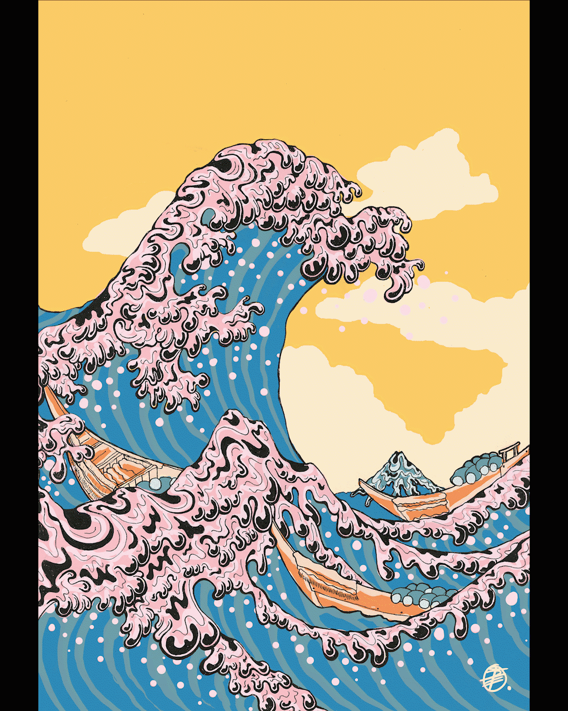
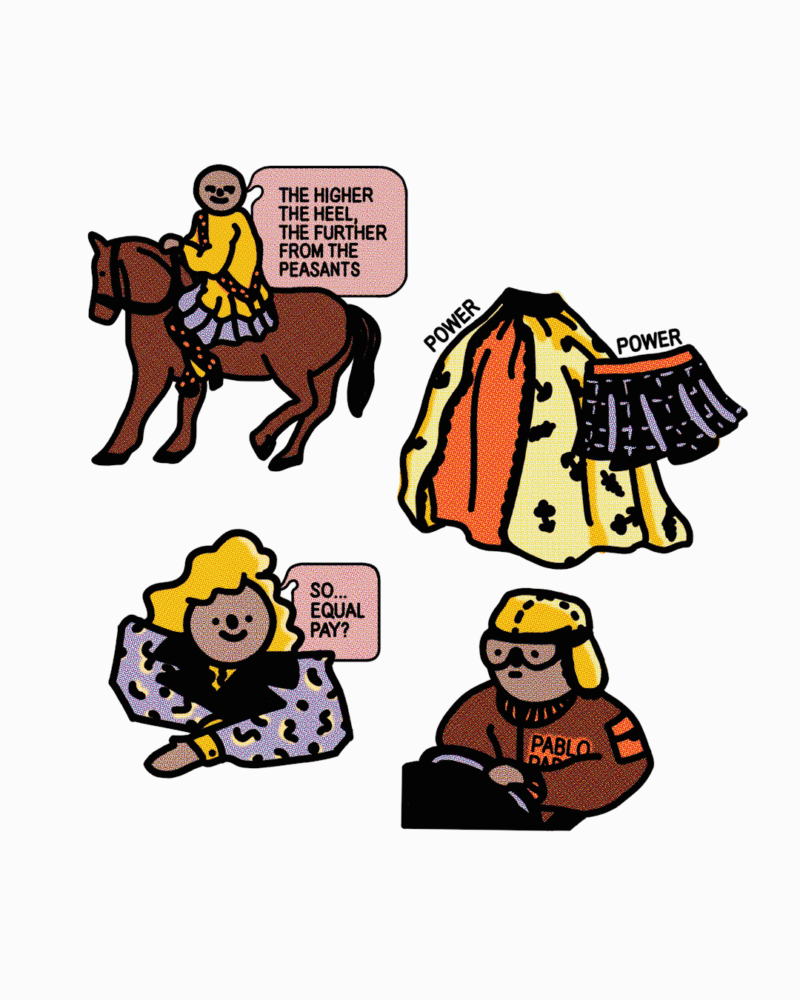
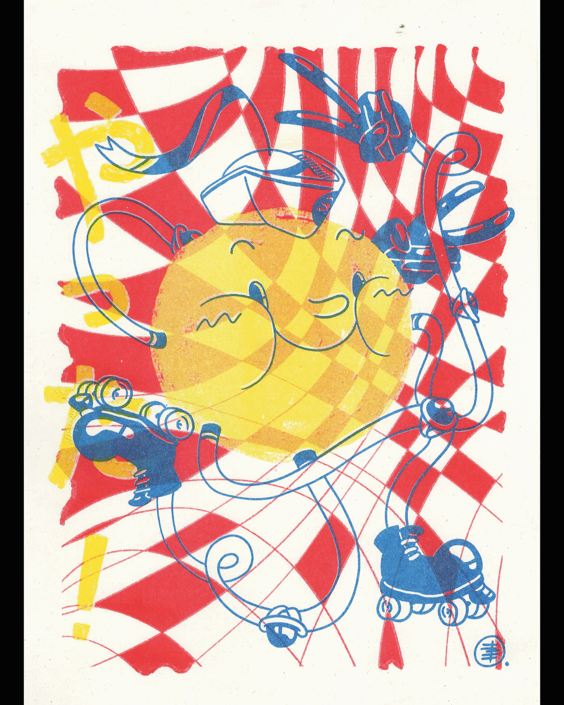

Various Illustrations for Print

New Wave Great Wave
Interpretation of Hokusai’s ‘The Great Wave’ for Esperanto Magazine Creative Issue 2017. Issue art directed by Dominique Vine.
Interpretation of Hokusai’s ‘The Great Wave’ for Esperanto Magazine Creative Issue 2017. Issue art directed by Dominique Vine.

Why We Wear What We Wear
Series of illustrations for Esperanto Magazine Generations Issue 2019. Magazine art directed by Emily McIntosh.

Series of illustrations for Esperanto Magazine Generations Issue 2019. Magazine art directed by Emily McIntosh.
YATTA! Sun
Riso print, 2019.
Riso print, 2019.